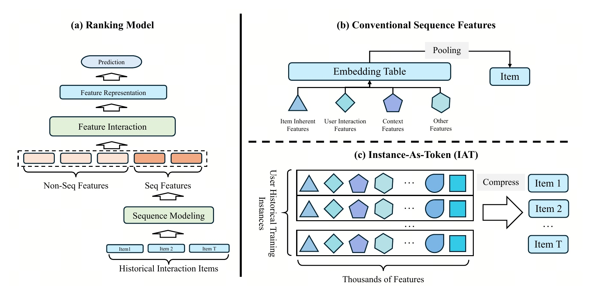
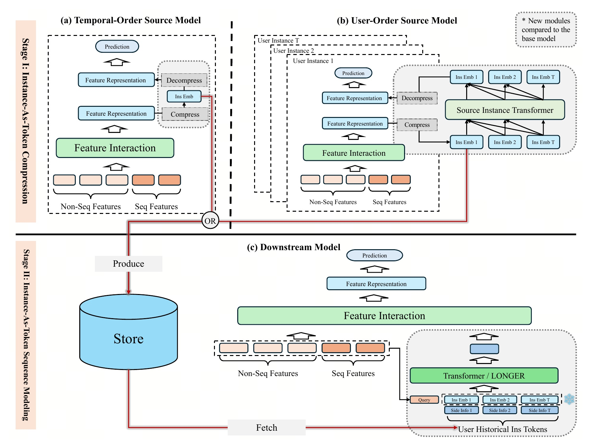
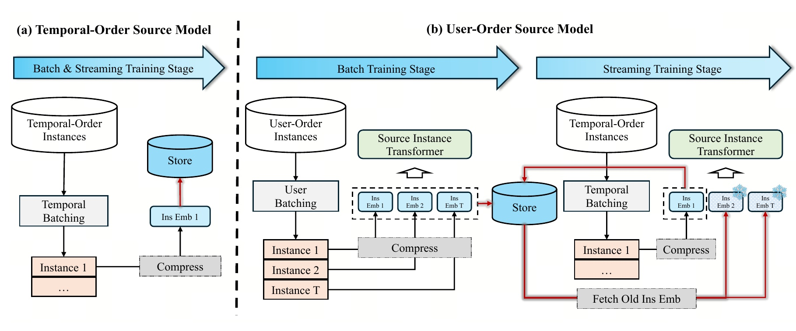
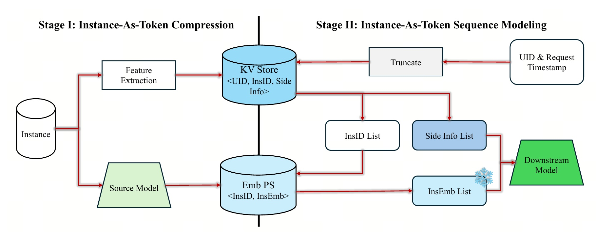
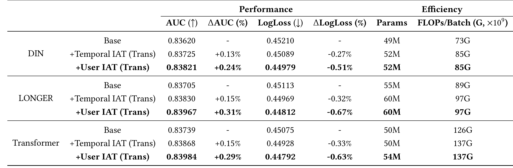
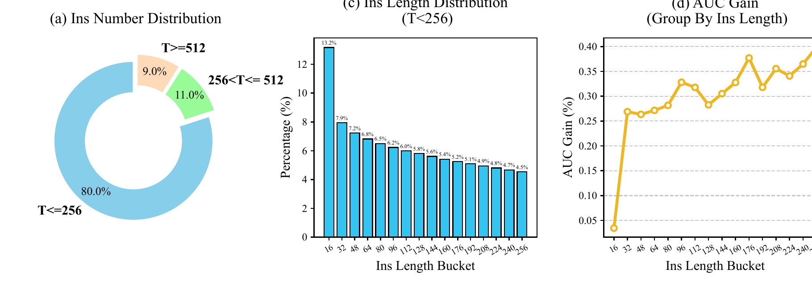
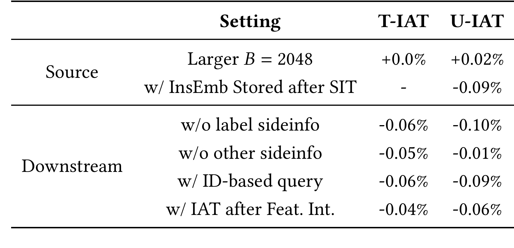
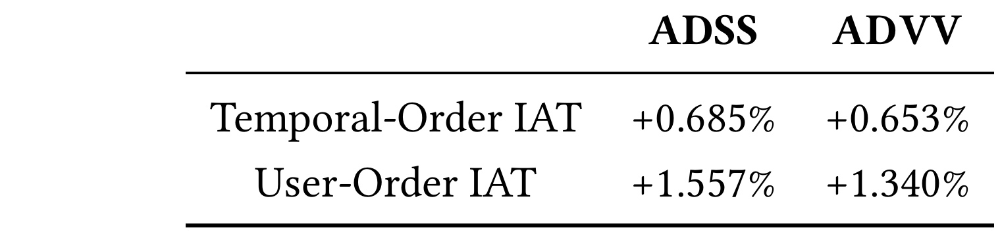
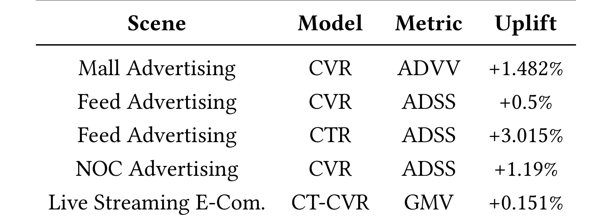

IAT：把一次历史交互压缩成一个 Token
字节跳动 Xinchun Li、Ning Zhang、Qianqian Yang 等人在论文 IAT: Instance-As-Token Compression for Historical User Sequence Modeling in Industrial Recommender Systems 中提出 Instance-As-Token（IAT）：不再把历史行为只还原成 item ID、类目和动作等少量手工序列特征，而是把一次线上排序训练实例里经过特征交互后的丰富信息压缩成一个低维 Instance Embedding（InsEmb），再把它当作下游序列模型的 token。论文全体作者机构均为 ByteDance；截至本次核验，未发现官方代码或独立项目页。PDF 的会议名称仍是占位文本，因此目前只能确认它是 2026 年 4 月公开的 arXiv v1，不能据此声称已被某个会议接收。
工业排序模型不断扩大 attention、特征交互和历史窗口，但每个历史位置仍常被压缩成少数手工字段；模型结构越强，输入的信息容量瓶颈反而越明显。直接保存每次历史实例的数千维完整特征又会造成不可承受的存储和传输成本，IAT 要解决的正是“历史 token 信息太薄”和“完整实例太重”之间的矛盾。
1. 背景和问题
1.1 序列模型在扩，历史位置却仍然很“薄”
现代工业推荐排序通常把输入拆成非序列特征与历史序列特征。非序列部分描述当前用户、候选 item、请求上下文等；序列部分记录用户过去点击、购买、观看或停留过的 item。过去几年，研究重点主要落在三个方向：让特征交互层更大、更深；让序列模型能处理更长历史；让 attention、聚类或稀疏化更高效。这些方向默认了一个前提：只要模型足够强，就能从输入序列里恢复更好的长期兴趣。
IAT 指出这个前提有盲区。一个历史行为在传统序列工程里往往只留下 item ID、类目、动作类型、时间戳和少量统计量。可是生成这次行为的原始训练实例可能包含数千个特征：item 的固有属性、用户与 item 的交叉特征、实时上下文、请求位置、价格与营销信息，以及大量经过 feature interaction 后才显现的组合信号。若历史序列只保存少数手工字段，后续 Transformer 再强也无法恢复已经被丢掉的信息。换言之，瓶颈不一定在“怎么建模序列”，也可能先出现在“每个序列位置究竟装了多少信息”。
这个判断与把 item embedding 做得更丰富并不等价。item embedding 描述的是物品本身或物品内容，而一次用户交互实例还带有用户状态、候选上下文、交互环境和多任务结果。相同 item 被同一用户在不同时间、不同入口或不同活动里消费，背后的含义可能完全不同。IAT 因此把建模单位从“历史 item”改成“历史训练实例”，试图让下游模型看到过去决策时刻的完整语境。
1.2 从手工序列特征到实例 Token
Figure 1 把三种表示方式并列起来：左边是常规排序模型，中间是把 item 的少量属性池化成历史序列特征，右边则把每个历史训练实例中的数千个特征压缩成一个 token。这里最重要的变化不是换掉 ranking backbone，而是重新定义历史序列的最小单元。

图的左半部分提醒我们，当前预测仍然可以使用非序列特征、传统序列特征、feature interaction 和已有 ranking head；IAT 并不要求重写整套排序系统。中间的传统方案把 item inherent features、user interaction features、context features 等少量字段映射到 embedding table，再做 pooling。右下角的 IAT 则把每个历史实例中成千上万的特征整体压缩，最终一个实例对应一个 token。于是“序列长度”和“单 token 容量”被解耦：长度决定看多少次历史交互，InsEmb 维度决定每次交互保留多少综合信息。
这也解释了为什么作者称其为新的 sequence feature engineering，而不是新的 attention。下游可以继续使用 DIN、LONGER 或 Transformer。IAT 提供的是一种上游、可复用的高容量历史序列特征。如果收益来自 token 信息密度，那么同一条 IAT 序列应能被不同下游结构消费；论文后面的实验正是在验证这种可插拔性。
1.3 直接保存完整实例为什么不可行
工业 ranking 实例的 feature representation 可能有约 6000 维。若每个用户保留数百甚至数年的历史实例，直接存原表示不仅容量大，而且跨服务传输、参数服务器读取和线上拼装都会变成瓶颈。论文给出的默认 InsEmb 只有 64 维，相当于先把高维交互表示压到一个紧凑空间，再由下游 adapter 恢复到适合当前任务的维度。压缩不是简单截断或随机投影，而是通过原排序目标联合训练，使低维瓶颈尽量保留对 CTR/CVR 有用的信息。
另一个难点是时间一致性。历史 token 必须只使用当时已经发生的事实；请求发生在时间 $t$ 时，不能取到 $t$ 之后的实例或标签。source model 与 downstream model 又可能独立进行实时更新，如果两边版本和存储时间错位，模型就会读到陈旧或越界表示。IAT 因此不只是神经网络模块，还必须设计 InsID、双存储、按时间戳截断和流式更新方式。论文的工业价值很大一部分就在这些边界条件上。
1.4 两阶段设计的真实代价
IAT 选择“先压缩并落库，再训练下游”的两阶段路线，换取 token 的跨任务复用与更高信息容量，但也引入额外复杂度：source model 要独立训练和持续更新，InsEmb 需要参数服务器存储，下游请求要先取 InsID 再批量取向量，用户顺序训练还要改变数据组织方式。它不是免费的 feature trick。
论文自身也承认 user-order source model 无法直接作为线上 serving model，因为 SIT 在同一用户的历史实例间建模，训练和流式维护成本较高。作者的解决方式是让 source model 只负责离线/流式地产生 InsEmb，真正在线预测仍由 downstream model 完成。这个拆分将“生成高质量历史 token”的成本从每个请求中移走，但把成本转移到训练、存储和同步基础设施。因此阅读实验时不能只看 AUC 增益，还要同时看 FLOPs、参数量、存储公式、流式陈旧性和跨场景复用能力。
2. 方法
2.1 两阶段 IAT：先生产历史 token，再消费历史 token
IAT 的总流程由两个互相独立但通过存储连接的阶段构成。Stage I 在 source model 中压缩每个历史训练实例，产生 InsEmb 并写入集中存储；Stage II 的 downstream model 按用户和请求时间取得固定长度的 InsEmb，再与必要 side information 拼成 InsToken 序列，用标准序列模型提取长期偏好。

Figure 2 上半部分给出两种可选 source model。Temporal-order 方案沿用普通按全局时间组织训练样本的方式，对每个实例独立压缩；user-order 方案先把同一用户的实例放在一起，再引入 Source Instance Transformer（SIT）让压缩表示接受历史上下文监督。两条路线都把 InsEmb 写入 Store。下半部分的 downstream model 从 Store 取回 $T$ 个 InsEmb，拼接 side info，连同候选侧 query 输入 Transformer 或 LONGER，输出再进入 feature interaction 和 prediction。 先写出基础 ranking 模型。设一条训练实例的传统序列特征为 $x_{\mathrm{seq}}$，非序列特征为 $x_{\mathrm{non\text{-}seq}}$，序列模块和特征交互模块分别为 $\mathcal F_{\mathrm{seq}}$ 与 $\mathcal F_{\mathrm{interaction}}$：
$h$ 是当前实例经过充分交互后的高维表示。对于用户 $u$、候选 item $v$，模型预测
这三个公式的意义在于：IAT 没有另造一个与业务目标脱节的重建任务。压缩模块被插在 $h$ 与预测头之间，梯度仍来自 CTR/CVR 标签。于是 InsEmb 被迫保留能降低原业务损失的信息，而不是尽量逐维重建所有输入。它更接近 supervised bottleneck，而非普通 autoencoder。 符号解释：$x_{\mathrm{seq}}$ 与 $x_{\mathrm{non\text{-}seq}}$ 分别是传统历史序列和当前非序列输入，$h$ 是二者交互后的高维表示，$u$、$v$、$y$ 分别代表用户、候选 item 与二元反馈标签，$\mathcal D$ 是训练实例集合；后续公式中的 $D_{\mathrm{raw}}$ 与 $D$ 分别表示压缩前后维度，$T$ 在序列公式中表示历史实例数，$B$ 表示 batch size，$\mathcal M$ 是防止未来信息泄漏的因果 mask。 训练与推理的角色也不同。Stage I 训练时需要 decompress 和原任务 prediction 来监督 InsEmb；真正给 Stage II 使用时，只保存 compress 之后的 InsEmb，不需要把 source model 的解压层带到每次 downstream 请求中。Stage II 训练和推理都直接消费已保存的 InsEmb。两阶段模型可以独立迭代，但必须用同步机制保证 downstream 读到最新且时间合法的表示。
2.2 Temporal-order：带业务监督的压缩—解压瓶颈
Temporal-order source model 是最直接的实现。设特征交互后的原始表示 $h\in\mathbb R^{D_{\mathrm{raw}}}$，压缩层为
其中 $W_1\in\mathbb R^{D\times D_{\mathrm{raw}}}$，$b_1\in\mathbb R^D$，$\sigma$ 可以是 ReLU 或 GELU。$h_{\mathrm{compress}}\in\mathbb R^D$ 就是要存储的 InsEmb，且 $D\ll D_{\mathrm{raw}}$。论文默认从约 6000 维压到 64 维，压缩比例很激进。 为了让这 64 维仍能服务原预测任务，训练阶段再用轻量 MLP 解压：
其中 $W_2\in\mathbb R^{D_{\mathrm{raw}}\times D}$，$b_2\in\mathbb R^{D_{\mathrm{raw}}}$。$h_{\mathrm{decompress}}$ 恢复到原表示维度，继续进入 ranking prediction 并接受前述 BCE 损失。这里的“恢复”不是要求 $h_{\mathrm{decompress}}=h$，论文没有额外给出逐维 reconstruction loss；它只要求解压后的表示仍能完成业务预测。因此 InsEmb 可以主动舍弃对标签无用的细节。 这个方案的输入是一条独立训练实例，输出是这条实例的 InsEmb。它与普通全局时间顺序的数据加载完全兼容，batch 与 streaming 阶段都可以逐实例计算并落库，改造成本低。缺点也很明确：压缩时看不到同一用户其他实例，只能保留当前实例对当前标签有用的信息。即便 downstream 会把多个 InsEmb 放进序列模型，单个 InsEmb 在生成时并没有被训练成“适合与相邻历史 token 共同建模”的表示。 论文报告 temporal-order source model 自身因引入瓶颈而有约 0.05% AUC 下降，但它生成的 IAT 序列仍能让 downstream 提升最高约 0.15%。这说明“source model 自身预测更好”与“产出的 token 更适合下游序列建模”不是同一个目标。Temporal-order 的价值在于低成本获得高容量历史 token；它是 IAT 的工程下限，也是检验更复杂 user-order 方案是否值得的基线。
2.3 User-order：用 SIT 把序列监督注入压缩表示
User-order source model 先改变训练样本组织方式：在一个时间范围内按 user ID 聚合实例，再按用户内部时间排序，切成固定长度 batch，必要时 padding。设同一用户有 $T$ 个历史实例，逐实例压缩后得到 $H_{\mathrm{com\_batch}}\in\mathbb R^{T\times D}$。将其 reshape 成单条长度为 $T$ 的序列，送入带因果 mask $\mathcal M$ 的 SIT：
因果 mask 保证每个实例只能访问过去实例，避免未来行为泄漏。论文图中 Instance 1 表示最新实例，因此它可以汇聚此前所有实例；实现时最重要的是保证排序约定与 mask 方向一致。SIT 输出再 reshape 回 $[T,D]$，经解压层参与每个实例的预测和 BCE 优化。 一个反直觉但关键的选择是：存储 SIT 之前的 $H_{\mathrm{com\_batch}}$，而不是 SIT 之后的 $H_{\mathrm{SIT\_batch}}$。 SIT 后表示已经吸收历史上下文，多个位置可能因 attention 变得相似，并丢掉当前实例的基础特征；若把它再作为下游序列 token，容易重复编码上下文。存储 SIT 前的表示，则每个 InsEmb 仍描述本实例，但由于梯度穿过 SIT 反传，它已经学会提供对序列预测有用的信息。Table 4 显示改为存 SIT 后表示会使 U-IAT 下游 AUC 下降 0.09%。 Batch 训练按用户组织，但线上 streaming batch 往往混合不同用户，无法直接把当前 batch reshape 成用户序列。作者为每个当前实例从 Store 取回同用户最近 $T-1$ 个旧 InsEmb，记为 $H'_{\mathrm{com\_stream}}\in\mathbb R^{B\times(T-1)\times D}$；当前 batch 新算的表示为 $H_{\mathrm{com\_stream}}\in\mathbb R^{B\times D}$。拼接时对旧表示停止梯度：
这里只取 $H_{\mathrm{SIT\_stream}}[:,0,:]$ 解压并预测当前 $B$ 条实例。旧 InsEmb 不参与反向传播，既控制计算量，也避免对参数服务器中的历史向量做跨时间梯度更新。新计算的当前 InsEmb 则写回 Store。

Figure 3 左侧说明 temporal-order 在 batch 和 streaming 中完全一致：当前实例独立压缩后立即存储。右侧把 user-order 分为两个阶段：batch 训练时按用户聚合，SIT 对同一用户的多实例建模；streaming 时仍按全局时间收当前实例，但通过 Store 补齐旧 InsEmb。雪花符号表示旧向量冻结，红线表示取回路径。这种 store retrieval 比“重新取历史原始特征并用最新 source model 前向计算 $T-1$ 次”便宜得多；后者虽然消除陈旧性，却在 $T=256$ 时可能增加约 256 倍前向计算。 Store retrieval 的代价是历史 InsEmb 由过去参数生成，与当前 source model 不完全一致。论文选择它作为默认工业方案，说明吞吐和时延优先于完全一致。附录还提出正向与反向 user ID 顺序各训练一份 source model，分别保存后半和前半用户的向量，用两遍训练缓解早期用户在模型未收敛时得到较差 InsEmb 的不公平：一遍 user-order source model 自身约有 0.6% AUC 增益，两遍方案最高约 0.8%。不过这进一步增加训练与存储维护成本。
2.4 从 InsEmb 到 InsToken、query 和下游序列
存储中的 InsEmb 维度低，取回后先由 adaptation MLP 投影到 downstream 的特征空间：
其中 $E_{\mathrm{InsEmb}}\in\mathbb R^{B\times T\times d}$，$W_{\mathrm{adapt}}\in\mathbb R^{d_{\mathrm{adapt}}\times d}$。论文默认 $d=64$、$d_{\mathrm{adapt}}=64$，但保留 adapter 使 source 与不同 downstream 的空间解耦，也为扩维和特征对齐留下接口。 InsEmb 虽压缩了数千特征，却不一定显式保留标签、动作或归因时间戳。论文因此允许加入 core side information：
$E_{\mathrm{side}}\in\mathbb R^{B\times T\times d_{\mathrm{side}}}$ 可以包含多任务标签以及若干与业务归因逻辑有关的时间信息。作者在广告场景中使用 label side info 和另外 5 类 side info。消融显示去掉 label side info 会让 T-IAT/U-IAT 分别下降 0.06%/0.10%，说明压缩表示不能替代所有结构化事实。side info 仍需按业务选择，并只存哈希值以降低隐私风险。 历史序列只包含用户侧 token，还需要一个带候选信息的 query。IAT 不采用只由少量候选 ID 构造的 query，而是把 downstream 当前请求中的序列、非序列 token 拼接并压缩：
$Q\in\mathbb R^{B\times d_{\mathrm{query}}}$，论文默认 $d_{\mathrm{query}}=512$。这个 query 与 $T$ 个 InsToken 投影到同一维度后交给 DIN、LONGER 或 Transformer。仅用候选 ID query 会使 T-IAT/U-IAT 下游 AUC 下降 0.06%/0.09%，说明高容量历史 token 需要同样信息丰富的候选条件来完成匹配。 序列模型输出放在复杂 feature interaction 之前效果最好。若先让当前请求特征完成 RankMixer 等交互，再把 IAT 输出接到后面，T-IAT/U-IAT 分别下降 0.04%/0.06%。作者的解释是，IAT 输出应与底层 token 一起参与充分特征交互，而不是作为末端附加向量。这也明确了 IAT 的系统接入点：它是一组新的底层历史特征 token，不是独立打分器。
2.5 InsID、双存储与时间戳截断
IAT 的在线架构把“序列索引”和“高维向量”分开存。特征抽取模块为每条训练实例生成唯一 InsID，同时写出 UID、InsID 和 side info；source model 则以 InsID 为 key 写入 InsEmb。下游请求先用 UID 与请求时间戳访问 KV Store，取得按时间排序、截断到长度 $T$ 的 InsID List 和 Side Info List，再用 InsID List 批量查询 Embedding Parameter Server（Emb PS），获得 InsEmb List。

Figure 4 中上方 KV Store 保存 $langle\mathrm{UID},\mathrm{InsID},\mathrm{SideInfo}\rangle$，负责用户序列顺序、时间截断与 side info；下方 Emb PS 保存 $langle\mathrm{InsID},\mathrm{InsEmb}\rangle$，负责向量读取。请求时间戳从右侧进入 Truncate，意味着取数边界由请求本身决定，而不是简单拿“当前最新”历史。InsID 可由请求 ID、creative ID、时间戳及任务相关 ID 的组合哈希得到，必须在生产系统里保证足够低的碰撞风险和稳定的跨服务一致性。 论文给出 FP32 存储估算：
$N_{\mathrm{daily}}$ 是每日实例数，$T$ 在这个公式里表示历史保留天数，$d$ 是 InsEmb 维度，4 表示每个 FP32 元素 4 字节。注意这里的 $T$ 与前文序列长度复用了符号，但语义不同。若每天数亿实例、保留两年、每个向量 64 维，论文估计需要数十 TB。这个量级虽可控，却并不小；实践还要考虑多副本、索引、冷热分层、过期清理、网络读取和 source model 版本。 source 与 downstream 都采用实时 streaming update，最新 InsEmb 会同步给 downstream。这里存在三类失败边界。第一，InsEmb 尚未写入但 KV 序列已经出现 InsID，下游必须定义 missing embedding 的降级策略。第二，参数更新导致新旧 InsEmb 分布漂移，adapter 与序列模型可能读取混合版本。第三，请求时间截断、标签 side info 的可见时间和归因窗口若处理不严，会造成离线/线上泄漏。论文给出了主架构，却没有公开一致性协议、缺失率、读取延迟和容灾细节，因此这些仍是复现时必须补齐的系统设计。
3. 实验结果
3.1 数据、基线与复现口径
实验使用匿名工业广告 CVR 数据，覆盖连续四个月、数百亿训练实例。特征包括用户、item、上下文与传统行为序列；论文称通过移除敏感信息并哈希特征 ID 做匿名化。由于数据与代码未公开，所有 AUC、LogLoss、FLOPs 和线上业务指标只能按论文报告解读，无法独立复算，也无法检查人群分桶、置信区间与具体实验周期。
基础模型统一使用 RankMixer 做 feature interaction，以减少不同融合模块造成的偏差。传统行为序列分别用 DIN、LONGER、Transformer，长度固定 512；IAT 下游默认用 Transformer，长度 $T=256$。source model 原始 representation 约 6000 维，压缩到 64 维。User-order SIT 为 2 层 Transformer，model dimension 64、FFN intermediate size 128；streaming 输入为 $B=1024,T=256,D=64$。训练在数百节点分布式 GPU 集群上进行，batch size 为 1024。
评价指标包括 AUC、LogLoss、参数量与每 batch FLOPs。论文使用“ΔAUC(%)”表示相对或比例增益的写法，但没有提供多次随机种子、置信区间或显著性检验。工业广告中很小的 AUC 变化可能有价值，但不能把 0.31% 直接理解成绝对增加 0.31 个 AUC 点；应同时查看原始 AUC，例如 LONGER 从 0.83705 到 0.83967。
3.2 离线主结果：user-order 在三种 backbone 上都更强
Table 1 同时比较 DIN、LONGER、Transformer 基座，加 temporal-order IAT 或 user-order IAT 后的表现与计算量。

DIN 基座 AUC 为 0.83620、LogLoss 为 0.45210；Temporal IAT 变为 0.83725/0.45089，对应 ΔAUC +0.13%、ΔLogLoss -0.27%；User IAT 进一步到 0.83821/0.44979，对应 +0.24%/-0.51%。参数从 49M 增到 52M，FLOPs/Batch 从 73G 增到 85G。说明 IAT 的收益并非来自大幅扩参，但也不是零成本，DIN 这组 FLOPs 增幅约 16%。
LONGER 基座为 0.83705/0.45113；Temporal IAT 达到 0.83830/0.44969（+0.15%/-0.32%），User IAT 达到 0.83967/0.44812（+0.31%/-0.67%），是表中最大的相对改进。参数由 55M 增到 60M，FLOPs 由 89G 增到 97G。Transformer 基座为 0.83739/0.45075；Temporal IAT 为 0.83868/0.44928（+0.15%/-0.33%），User IAT 为 0.83984/0.44792（+0.29%/-0.63%），参数从 50M 到 54M，FLOPs 从 126G 到 137G。
三个 backbone 的方向完全一致：Temporal IAT 有稳定小幅收益，User IAT 约将增益再扩大一倍。这支持 SIT 的作用不是单纯让 source model 自身更准，而是把序列可建模性写进压缩前 InsEmb。最优绝对 AUC 来自 Transformer+User IAT 的 0.83984；最大 ΔAUC 来自 LONGER+User IAT 的 +0.31%。两者差别很小，论文没有报告统计波动，不能宣称某个下游结构绝对优胜。
Table 2 进一步固定传统行为序列为 Transformer，只改变 IAT 序列建模器：DIN 仅把 AUC 从 0.8373 提到 0.8376（+0.03%），LONGER 到 0.8399（+0.31%），Transformer 到 0.8398（+0.29%）。这表明高容量 InsToken 仍需要足够强的序列模型；把 token 做厚并不会让简单 attention 结构自动获得同等收益。IAT 是输入表示与下游架构的共同设计，不应被理解为任意模型即插即涨。
3.3 哪些用户受益：历史越长，增益总体越大
Figure 5 给出用户实例数量分布、256 以内的实际长度分布和按长度 bucket 的 AUC 增益。

左图显示约 80% 用户历史实例数不超过 256，11% 位于 256 到 512，9% 至少 512，因此默认 IAT 最大长度 256 能完整覆盖多数用户，但会截断约 20% 的重度用户。中图在 $T<256$ 的用户内继续分桶：长度 16 占 13.2%，随后 32/48/64 桶为 7.9%/7.2%/6.8%，长桶占比逐渐下降。右图显示 AUC 增益总体随实例长度上升：长度 16 只有约 0.03%，到 32 跃升至约 0.27%，之后在 0.26%—0.38% 间波动，接近 256 时约 0.4%。
这张图支持“更长历史里，丰富实例 token 比手工字段更有价值”，但曲线并非严格单调，且只展示不超过 256 的分桶。它不能证明把长度无限扩展就会持续增益。对于超过 256 的 20% 用户，论文没有在这张图中展示截断损失、长尾兴趣覆盖或请求延迟。工程上应重点复现不同活跃度分桶：短历史用户可能不值得承担额外读存储开销，长历史用户则可能成为 IAT 的核心受益人群。
3.4 扩展规律：source、downstream 和 base model 都能继续变大
Table 3 在三类更强基础模型上测试 IAT。Dense Scaling 把模型扩到 150M 参数，source AUC 增益 +0.54%，downstream +0.50%；Sequence Length Scaling 扩到 350M，分别 +0.51%/+0.30%；Feature Interaction Scaling 扩到 1B，分别 +0.41%/+0.33%。即使基础模型已经扩大，user-order IAT 仍有增益，说明信息瓶颈不会因为 ranker 变大自然消失。不过三组改动同时涉及参数、历史长度或交互结构，不是同一条严格 scaling curve，不能直接比较哪种扩展“效率最高”。
Figure 6 扩大 SIT。默认 $D=64,L=2,d=64$ 时，source/downstream AUC 增益约 0.52%/0.35%；把输入维度扩到 256、保持 2 层且最终仍压到 64 维，变为 0.69%/0.40%；最终 InsEmb 也扩到 256 维时约 0.69%/0.44%；再把 SIT 扩到 4 层，达到 0.80%/0.47%。source 增益随容量增长更明显，downstream 也上升但边际更小。更大的 SIT 和 InsEmb 同时增加训练、PS 存储与网络成本，论文没有给这些扩展点的端到端成本，所以 0.47% 不是免费上限。
Figure 7 把 downstream 最大 IAT 长度从 32 扩到 512，并比较 1/2/4 层 Transformer。论文拟合的长度幂律近似为 $y=0.0400x^{0.3035}$、$y=0.0471x^{0.3254}$、$y=0.0541x^{0.3272}$；按 FLOPs 拟合约为 $y=0.0310x^{0.3094}$。更深模型的曲线整体更高，作者据此称 IAT downstream 呈 scaling law。更谨慎的理解是：在这份内部数据、给定模型和 32—512 长度范围内，AUC gain 对计算量呈稳定次线性趋势；它不构成跨数据集、跨业务的普适定律。
3.5 消融：为什么存 SIT 前、保留 side info 和丰富 query
Table 4 把 source 与 downstream 的关键决策拆开。

把 batch size 从 1024 增到 2048，T-IAT 无变化，U-IAT +0.02%。原因是 user-order batch 能覆盖同一用户更多历史实例，而 temporal-order 按实例独立压缩，不受此影响。把 InsEmb 从 SIT 前改为 SIT 后存储，U-IAT -0.09%，验证了“让 SIT 塑形，但保留每个实例的基础表示”这一选择。SIT 后表示已经吸收上下文，直接存它会让 token 同质化并削弱下游再次建模的空间。
去掉 label side info，T-IAT/U-IAT 分别 -0.06%/-0.10%；去掉其他 side info 则 -0.05%/-0.01%。User-order InsEmb 对非标签的上下文 side info 更不敏感，可能因为 SIT 已通过同用户序列吸收部分时序结构；但标签仍是 InsEmb 底层 representation 不直接编码的监督结果，必须显式补回。论文只在一个广告场景做此消融，其他业务需要重新判断哪些字段属于“必须显式保留”的事实。
将 query 简化为候选 ID 特征，T-IAT/U-IAT -0.06%/-0.09%；把 IAT 序列输出放到 feature interaction 之后，分别 -0.04%/-0.06%。这两项共同说明 IAT 的收益依赖对称的信息容量与早期融合：历史 token 很丰富，候选 query 也要丰富；IAT 输出应参与当前请求的复杂交互，而不是在末端拼接。消融幅度都不大，但方向一致，且 user-order 对错误设计更敏感。
3.6 线上 A/B：同域更强，跨域也有正向提升
同域广告实验把 source model 在广告场景产生的 IAT 序列用于同一场景。论文报告的 ADSS（Advertiser Score）和 ADVV（Advertiser Value）均达到统计显著提升，但未公开实验周期、流量规模、显著性阈值或置信区间。

Temporal-order IAT 的 ADSS +0.685%、ADVV +0.653%；User-order IAT 分别 +1.557%、+1.340%。User-order 的线上增益约为 temporal-order 的两倍，与离线 AUC 方向一致。这是论文最有说服力的证据：SIT 训练出的 InsEmb 不只改善匿名离线数据，还在长期运行的强广告基座上带来业务指标提升。不过 ADSS/ADVV 是内部指标，外部读者无法判断量纲、收入映射和波动性。
表内两行还提供了一个重要的部署决策信号：如果团队只能承受逐实例压缩与简单落库，temporal-order 已经能获得约 0.65%—0.69% 的两项业务 uplift；如果具备按用户组织数据、维护 SIT 与旧 InsEmb 流式读取的能力，user-order 才把收益推到 1.34%—1.56%。因此 user-order 的额外价值应与新增训练、存储和一致性成本成对评估，而不是只比较最终 uplift。
作者还把同一套 IAT 序列用于其他业务，测试跨域迁移。

Mall Advertising 的 CVR 模型带来 ADVV +1.482%；Feed Advertising 的 CVR 与 CTR 模型分别带来 ADSS +0.5% 与 +3.015%；NOC Advertising 的 CVR 模型 ADSS +1.19%；直播电商 CT-CVR 模型 GMV +0.151%。五个场景全部为正，说明 InsEmb 的确捕获了一部分可跨下游复用的用户历史信息，而不是只记住 source model 的单一标签。
但“跨域”并不等于跨公司、跨用户体系或零适配泛化。这些业务仍处在字节跳动内部，可能共享 UID、特征基础设施和行为生态；downstream 也会重新训练 adapter、query 与序列模型。论文没有报告 negative transfer、人群覆盖、长期留存或 source 更新故障下的回退。因此更准确的结论是：在共享身份与工业基础设施的多个内部推荐场景里，IAT 序列具有可迁移价值。
3.7 效率、隐私与证据边界
离线 Table 1 的额外参数为 3M—5M，FLOPs 增加 8G—12G，表面上相对温和；但这只统计 downstream 模型，不能代表两阶段系统的总成本。User-order source model 需要 SIT、按用户重排的 batch 管线、流式旧向量读取和独立训练集群；PS 还要持久化数十 TB 级 InsEmb。线上请求增加一次 KV 序列读取和一次 Emb PS 批量向量读取。论文没有公开 P50/P99 延迟、QPS、存储副本、cache hit rate、向量缺失率和 source/downstream 同步开销。
隐私方面，作者称移除了敏感用户/item 信息并哈希 feature ID，只存 hashed side info。但 InsEmb 压缩了数千特征，可能仍携带用户行为或敏感属性的可推断信息。哈希并不等于匿名化，尤其在高频 ID、辅助信息或模型反演攻击下。生产复现需要把 InsEmb 视为用户行为数据，设置访问控制、保留期限、删除链路与审计，而不能因为它是 64 维浮点向量就降低保护等级。
证据层面，论文优势是有数百亿实例、三种 backbone、扩展实验、消融和多场景线上 A/B；弱点是数据、代码、内部指标与显著性细节不公开，PDF 仍含会议模板占位信息。所有结果都来自作者团队，无法进行独立重复。对于外部团队，最现实的复现不是追求同样 uplift，而是先验证三件事：当前手工历史字段是否真的形成信息瓶颈；受监督压缩是否能在可接受存储下保留增益；取数链路是否能在目标 P99 延迟内稳定服务。
4. 总结
4.1 我的判断
IAT 最有价值的贡献不是提出一种更复杂的序列网络，而是把工业推荐中的扩展问题从“历史能看多长”推进到“每个历史位置能携带多少信息”。它以训练实例为单位，将数千维 feature interaction 表示压成 64 维 InsEmb，通过原 CTR/CVR 目标保留高价值信息，再让下游用成熟的 DIN、LONGER 或 Transformer 建模。Temporal-order 方案改造小、稳定产生收益；user-order 方案用 SIT 把序列监督注入压缩表示，并在离线与线上获得约两倍于 temporal-order 的增益。
方法中最精妙的地方是存储 SIT 前表示。SIT 只作为训练时的“塑形器”，让每个独立 InsEmb 学会对历史上下文有用；真正落库的 token 仍保留当前实例特征，避免把已经混合上下文的表示交给下游再次混合。配合 label/时间 side info、丰富 query 和 feature interaction 前融合，IAT 形成了一条逻辑闭合的 token 生产—存储—消费链路。
4.2 工程复现建议
第一步应先建立信息瓶颈基线：在当前系统中比较只用 item/类目/动作序列与加入更多历史上下文字段的上限，按历史长度、用户活跃度和业务入口分桶。如果短历史用户也无明显差距，就不必立即建设两阶段基础设施。第二步先复现 temporal-order supervised bottleneck，从原 representation 压到 64/128/256 维，测量 source 任务损失、downstream 增益、每日新增存储和读取 P99。
第三步再引入 user-order SIT，并严格核对实例方向、causal mask、store retrieval 与 stop-gradient。应同时比较存 SIT 前/后、旧向量重算/直接读取、不同陈旧窗口和 source 版本混用。第四步建设双存储与降级：InsID 列表存在但向量缺失时回退到传统序列；对过期或版本不兼容向量设置 TTL；记录 KV/PS 命中率和每请求字节数。第五步把收益与成本一起上线，至少报告 AUC/LogLoss、分桶 uplift、P50/P99、QPS、PS 容量、source 训练成本和故障回退。
4.3 局限与后续跟进
IAT 的主要风险来自系统复杂度和表示陈旧性。两阶段模型独立更新，旧 InsEmb 与当前 source 参数不一致；跨业务共享 token 还可能放大一个 source bug 的影响范围。论文默认 store retrieval 而不是重算历史向量，是合理的效率选择，却留下版本漂移问题。另一个风险是容量扩展：SIT、InsEmb 和 downstream 都显示继续变大仍有增益，但存储公式与网络带宽会线性增长，必须找到业务 uplift 与基础设施成本的平衡点。
后续最值得跟进的是论文自己提出的一阶段化与更先进压缩：如果能在不保存独立历史向量的情况下端到端学习高容量实例 token，可以降低同步与存储复杂度；若使用量化、蒸馏或分层冷热表示，则可能把 64 维 FP32 的数十 TB 进一步压缩。同时需要公开数据或可复现 benchmark，验证 instance-as-token 是否在共享内部生态之外仍优于更丰富的手工序列、长序列建模和用户表征缓存。就当前证据而言，IAT 是一项很强的工业架构提案，但它的可迁移性与总拥有成本仍需在目标系统中重新证明。